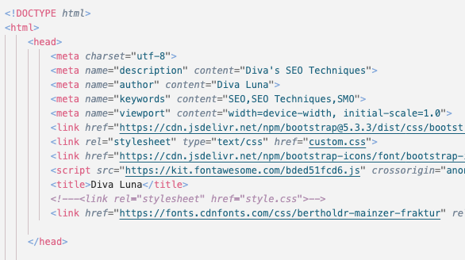

Meta tags are a tool that can be added into an HTML document to define the metadata and add information that make it more search engine friendly. Tools like defining a description of the web page and adding keywords for search engines make it easier for those search engines to display your website in its results. Alongside this, having a description that matches the search query makes it more likely for a user to click on that website.
Mobile optimization allows for a user-friendly experience for mobile users. This allows for your website to rank higher on search engines when the user is using a mobile device. Considering most people are using mobile devices to browse the web, having a mobile-friendly site is important to make sure it is being picked up by search engines. Another reason why this is so important is because Google uses mobile-first indexing, meaning it uses the mobile version of a site's content.
Backlinks are links that point to your website that are hosted by other websites. Because they show that other websites deem your material significant enough to reference, search engines like Google view them as a sign of trust and reliability. Reputable websites that provide high-quality backlinks to your website raise its domain authority and search engine rating. Additionally, they increase conversions and engagement by bringing in referral traffic from visitors who click on the link to visit your website. Backlinks can also increase brand awareness and position your website as a trustworthy source in your sector or specialty.
Social sharing buttons are buttons that allow for users to post information or content from your site to social media platforms. These buttons allow users to share your material with their personal networks, expanding its reach and resulting in more website traffic and audience engagement. They also increase the trustworthiness of your content since people view well-shared material as more reliable or useful. These buttons may improve SEO and boost your brand's social media presence when placed strategically on blog articles, product pages, or other high-value material.
Hashtags allow for content to be organized and categorized, similar to adding keywords for SEO optimization. By organizing content using hashtags, it makes it easier for users to find content that is relevant to them, and it also allows for your content to be easier to find amongst hundreds of posts. Hashtags also aid during trends, increasing visibility and engagement. Instagram allows for users to follow hashtags, meaning that posts that include those tags are visible to a wider audience that typically wouldn't see those posts.
Consistent posting entails having a consistent posting schedule in order to regularly release new content and to keep the audience engaged. Hvaing a consistent posting schedule allows for users to frequently receive new content in their feeds. Alongside this, social media algorithms are more likely to pick up accounts that regularly post content, meaning that they are more likely to pushed into people's feeds and in browsing tabs. Frequent posting also makes it easier to see what is favoured by the audience and what's not, allowing for refinement and a focus on a niche.
I added meta tags into my website's code so that it could be accessed by search engines.
